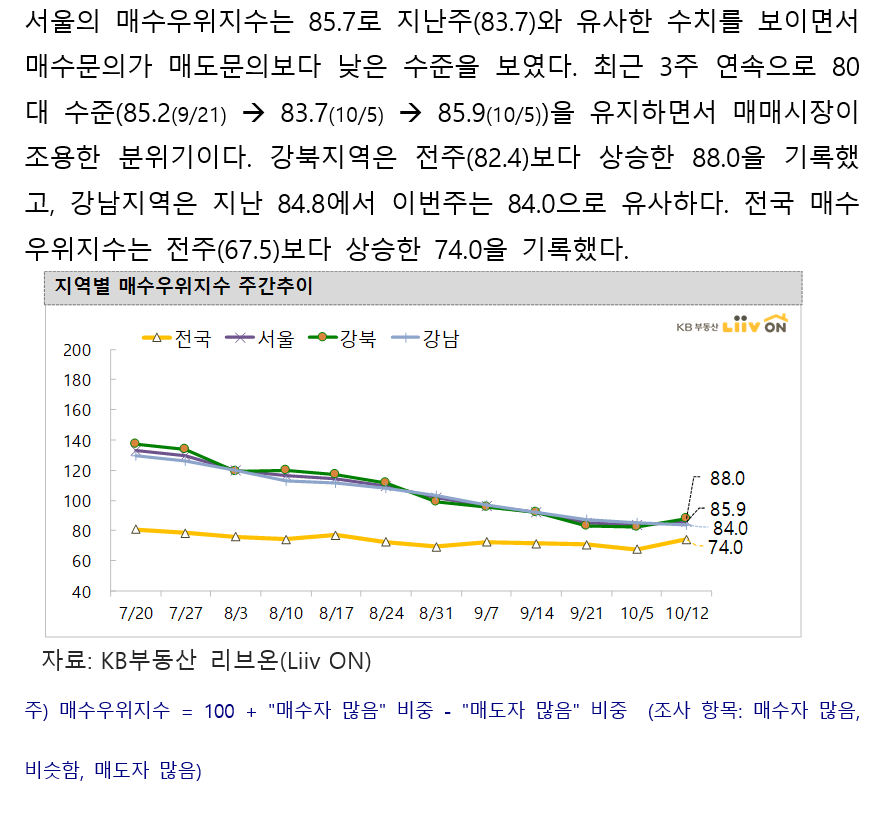
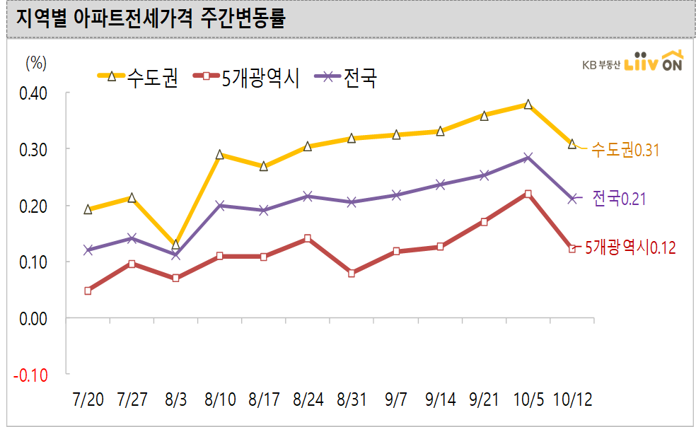

임대차 3법 때문에 전세난이 발생했다?
게시: 2020-10-22T06:30:16+09:00
3줄 요약 :
- 맞습니다. 임대차 3법 때문에 전세난이 심해졌다고 생각합니다.
- 그러나 이는 일시적인 현상이고, 또 그로 인해 고생하시는 세입자가 많지는 않을 것입니다.
- 임대차 3법은 유지되어야 합니다.
1) 규제 때문에 전세공급이 줄어서 그렇다 --> 그러면 원래의 전세공급은 어디로 사라졌을까? 빈집으로 비워뒀다? 자식이나 조카에게 그냥 살라고 줬다? 이건 말이 안되는 설명인 것이, 규제로 인해 제값을 못받게 되니까 아예 더 큰 손해를 보기로 결정할 감정적 집주인이 그렇게 많을 것 같지는 않습니다. 2) 전세가 월세로 전환되어서 전세공급이 줄어든 것이다 --> 그러면 월세 공급이 확 늘었으니 월세가 싸졌겠네? 월세 물량이 확 늘었다는 정보는 못봤습니다. 무엇보다, 전세를 월세로 돌릴 정도로 여유자금이 많은 집주인이 그렇게 많을 것 같지는 않습니다. 3) 세입자들이 전셋집에서 나가려 하질 않으니 전세공급이 없어졌다 --> 이게 맞는 설명 같습니다. 아직 입주도 안된 신규주택이 아닌 이상 모든 전세에는 세입자가 이미 들어있는 것이 당연합니다. 그 세입자들은 당연히 임대차 3법으로 인해 혜택을 보는데, 특별한 사유가 없는 이상 전셋집에서 나갈 이유가 없습니다. 그러니 전세공급은 전멸하는 것이 당연합니다. 4) 그러면 대체 왜 전세난이 발생하는가? --> 그럼에도 불구하고 이사를 해야 하는 가구는 분명히 있기 때문입니다. 각 가정 상황에 따라 유리한 임대차 3법의 혜택을 포기하고라도 이사를 해야 하는 경우가 분명히 있습니다. 가령 직장을 옮겼다든가, 결혼하여 독립을 한다든가 하는 것입니다. 그런 경우, 기존 전세를 먼저 비워주고 새로 전세를 구하는 경우는 없습니다. 언제나 기존 전세를 쥐고 있는 상황에서 새 전셋집을 찾지요. 특히 이번처럼 임대차 3법 때문에 전세 공급이 줄어들거라고 모든 언론이 떠드는 상황에서 '저희 전셋집 뺄게요, 전세 연장권 행사하지 않을테니 중개업소에 그렇게 물건 내놓아 주세요' 라고 집주인에게 통보할 세입자는 없을 것입니다. 그러니 당연히 전세를 찾는 사람은 많지만 매물로 나온 전셋집은 없을 수 밖에 없습니다.
결국 전세난이 발생한 것은 사실인데, 대부분의 세입자들은 그냥 현재 전셋집에 계속 거주하므로 이로 인해 고생하시는 세입자의 수는 많지는 않을 것으로 생각합니다. 전세수급지수는 확실히 공급 부족을 나타냅니다만, 그건 공급과 수요의 비율을 나타내는 것일 뿐, 실제 전세 수요 자체는 많이 줄었을 것입니다. 생각해보면 당연합니다. 대부분의 세입자들은 그냥 전세 연장을 하면 되니까요.
원래 부동산 시장은 전체 규모 중 일부만 거래가 일어나는데, 그 소수의 거래가 전체 시장의 방향을 좌우합니다. 그래서 전체 수요자의 수가 줄었다고 해도, 수요 수보다 공급 수가 약간만 더 부족해도 대란이 발생하기 쉽습니다.

(아파트 매매가는 조금씩 잡혀가는 것 같지만 전세는... 흠. 출처는 국민은행 부동산 onland.kbstar.com )
5) 그러니 임대차 3법 철폐해야 한다 --> 이건 전형적인 분탕질에 불과합니다. 아주 쉽게 보면 이번 임대차 3법은 현행 2년인 전세 보장을 4년으로 늘린 것입니다. 그것이 시장의 기본 질서를 근본적으로 뒤흔든 것이 아닙니다. 과거 1년이던 전세 보장이 2년으로 늘었을 때도 전세시장은 5개월 정도 혼란을 겪었습니다. 언론 통제하던 군사정권인 노태우 대통령 때 실행한 것인데도 그랬습니다. 지금은 재벌 이익을 위해 노력하는 많은 언론들의 격렬한 선동 속에서 실시된 것이니 어쩌면 혼란이 더 길어질지도 모르겠습니다. 그러나 분명히 시장은 거기에 적응하고 안정화될 것입니다.

(글쎄요, 지난주 전세가격 상승세가 소폭 수그러들었다고는 하는데, 임대차 3법은 7월말에 발표되었으니 적어도 올해말까지는 계속 혼란이 지속되지 않을까 합니다. 출처는 국민은행 부동산 onland.kbstar.com )
임대차 3법은 분명히 집주인에게 불리한 규정이고, 어떻게든 집주인들이 이 법안을 없애려고 합니다. 부작용 없는 약이 없듯이, 모든 개혁에는 반드시 일부 피해와 분쟁과 저항이 뒤따릅니다. 그런 저항에 굴복하는 것이 바로 개혁 실패입니다. 시장원리를 부정하는 법이므로 철폐해야 한다는 주장을 여러번 봤는데, 전세계 자본주의 국가들 어디에도 모든 것을 시장원리에만 맡겨두는 나라는 없습니다. 자본주의의 첨단을 달리는 미국도 반독점법은 물론 온갖 세입자 보호를 위한 규제 조치를 시행하고 있습니다. 6) 재건축 허용해서 공급을 늘려야 할 것 아니냐 ? --> 실시 이후 5년 10년 후에는 모를까, 단기적으로는 결코 해결책이 아닙니다. 재건축 아파트 인허가를 대폭 허용해서 아파트 수를 늘리자는 주장도 일리는 있습니다만, 그건 아파트 가격 폭등을 일으킬 거라고 예상합니다. 공급이 늘면 가격이 내려가는 것이 상식이라고 하지만, 그건 5~6년 후의 이야기일 것 같아요. 용적을 대폭 올릴 수 있도록 재건축 인허가가 나면 당연히 기존의 그 낡은 아파트 가격은 폭등합니다. 그러면 수도권의 다른 낡은 아파트들도 재건축 인허가를 기대하며 가격이 덩달아 폭등할 수 밖에 없습니다. 가격이 오를 것으로 예상되는 물건에 돈이 몰리는 것은 당연하니까요. 그러면 결국 모든 아파트 가격이 그에 따라 올라가게 됩니다. 이건 오랜 시간에 걸쳐 우리가 반복해서 경험했던 과정입니다. 게다가 재건축을 허용하는 것은 결코 당장 아파트 가격을 안정화시킬 수단이 아닙니다. 재건축으로 늘어나는 아파트들은 인허가 이후 빨라야 3년 뒤에나 공급되지만, 당장은 낡은 아파트를 부수어야 하므로 그 3년 간은 오히려 아파트 공급이 줄어들기 때문입니다. 재건축 아파트에 살던 수백 수천의 가구들도 어딘가에 전월세를 얻어야 하기 때문에 당연히 전월세는 당장 폭등합니다. 7) 정부가 잘 했다는 것이냐 ? --> 딱히 잘한 것은 없습니다. 특히 4번 항목 같은 경우는 쉽게 예상이 되는 일인데 거기에 대해 미리 홍보를 하고 국민들에게 '단기 충격에 대비하고 양해해달라'고 부탁했어야 합니다. 그러나 여전히 그에 대한 설명도 부족합니다. 정부는 코로나와 저금리 때문에 전세가격이 오르는 것은 어쩔 수 없다고 해명합니다. 뭐 맞는 말이긴 합니다만, 국민이 원하는 것은 이유가 어쨌건 전세가가 낮아지는 것입니다. 그걸 해결 못하면 이유야 어쨌건 욕을 먹는 것은 당연합니다. 정부가 저금리에 대응할 뾰족한 방법은 없으니 결국 정부가 내놓을 수 있는 해결책은 공급을 늘리는 것인데, 그건 5년 10년 후에나 효과를 볼 수 있는 정책이고 단기적으로는 오히려 매매가격이나 전월세 가격을 올리는 효과를 낳습니다. 장기 집권을 노리는 탄탄한 정권이라면 현정권도 집권 초기부터 공급 확대에 집중했어야 하는데, 정부는 나름대로 공급 확대를 실시했다고 주장하겠지만 시장이 피부로 느끼는 것 같지는 않습니다. 그건 분명히 정부가 욕을 먹을 부분입니다.